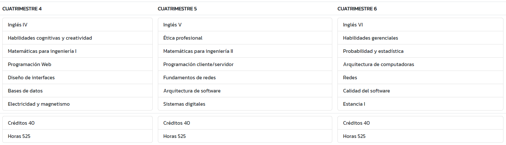
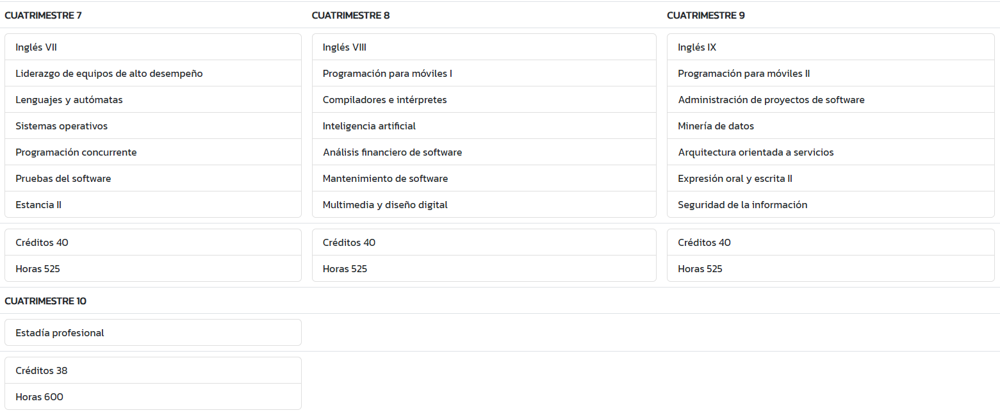
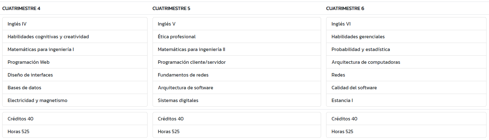
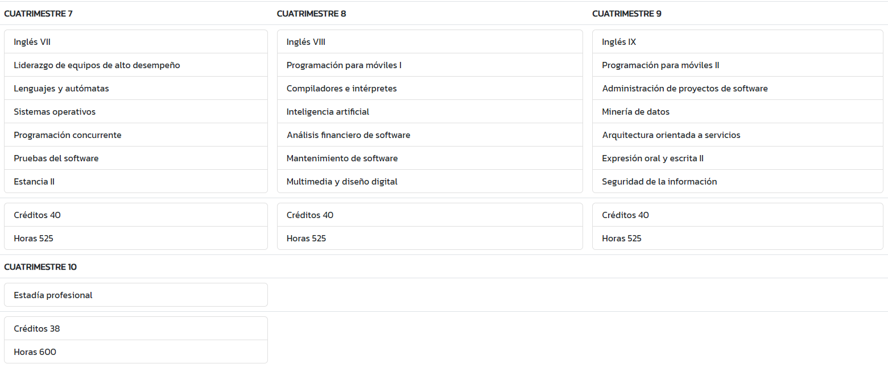

Ingeniería en Software
Universidad Politécnica de Chiapas
¿Qué es la Ingeniería en Software?
Es la aplicación práctica del conocimiento científico y humanístico al diseño y construcción de programas de computadora, diseñando soluciones de software innovadoras y acordes con el entorno social y empresarial, mediante herramientas, técnicas, tecnologías de usabilidad, base de datos, redes, teleproceso y lenguajes de programación. En Politécnica de Chiapas formamos ingenieros profesionales especializados en el desarrollo de software; capaces de crear, innovar y aplicar la tecnología para ofrecer soluciones en las áreas de la comunicación digital, automatización, negocios, sistemas computacionales, educación, transportes, diversión y entretenimiento.
Misión
Formar profesionales competentes en Ingeniería en Software, a través de un programa de estudio de ingeniería, en un ambiente seguro para el desarrollo de soluciones en los sectores empresariales y cientifico-tecnológico.
Visión
Ser un programa educativo, con presencia nacional e internacional a través del establecimiento de acuerdos de colaboración y actividades académicas; que se carateriza por la formación integral de profesionales competentes para el desarrollo de software de calidad para la industria empresarial y cientifica.
Perfil
El aspirante deberá contar con las habilidades en las áreas de pensamiento matématico y análitico, estructura de la lengua y comprensión lectora; así también, deberá contar con las competencias básicas de matemáticas y física.
Perfil de egreso
El ingeniero en Software tiene la capacidad de diseñar y desarrollar software de calidad, gestionar, administrar e implantar proyectos, así como desarrollar investigación en el campo de las tecnologías de información así como planear soluciones de tecnologías de información para automatizar y optimizar procesos de las empresas mediante proyectos de software.
Plan de estudios
 


